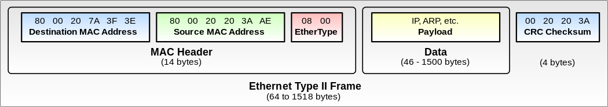

IP/MAC Header
-
MAC Layer - Ethernet Type II Frame, which contain: 
MAC Header: (14 bytes)- Destination MAC Address:
6bytes - Source MAC Address:
6bytes - EtherType:
2bytes 這也是為什麼在範例中，使用的ethernet_t中使用的是 ( 48 + 48 + 16 ) bits 的格式（e.g. = MAC Header）
- Destination MAC Address:
Data: (46~1500 bytes)- Payload(IP, ARP, etc.)
CRC Checksum: 4 bytes
-
IP Header

ip version: 4 bitshdr lens: 4 bitsTOS (Type of Service): 8 bitsTotal Length: 16 bitsidentification (Fragment ID): 16 bitsflags (R, DF, MF): 3 bitsfragment offset: 13 bitsTTL (Time-To-Live): 8 bitsProtocol: 8 bitsHeader Checksum: 16 bitsSource IP Address: 32 bitsDestination ID Address: 32 bits ( P4 tutorial 擷取到這部份 )Options: 32 bitsData: leftover part (from 24 bytes ~ end)